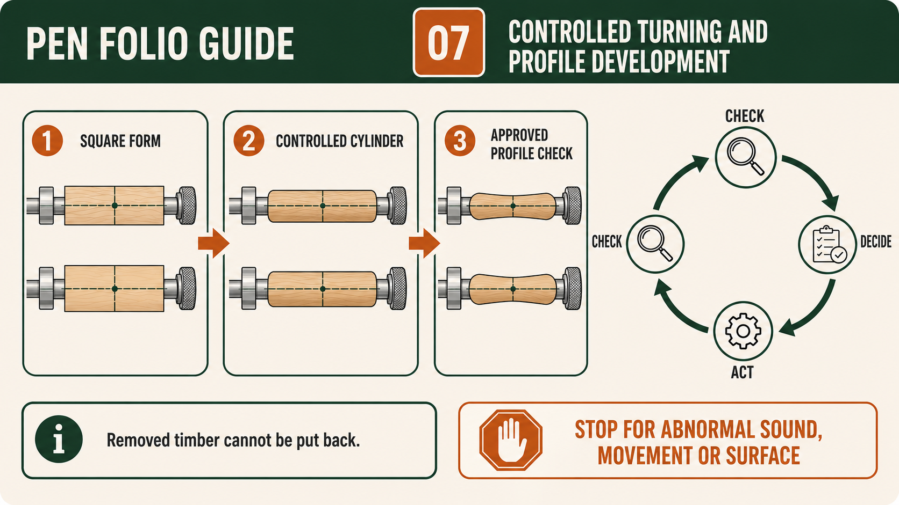
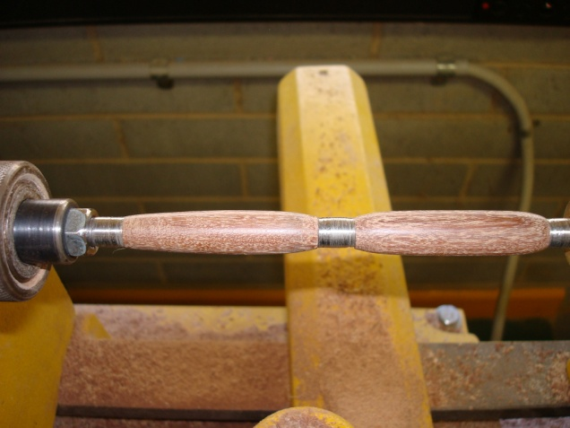

Module presentation
Learn with the slides
Use the presentation to preview From square blank to controlled cylindrical form, Understanding cutting and scraping during Pen turning, Monitoring profile, alignment and material removal against approved kit references before working through the theory, videos, checks and written evidence.
Weeks 9-10
This module
Move gradually from square to cylindrical form while observing fibre response, symmetry, alignment and stop points.
Your work
Student details
Your entries save automatically in this browser. Use Print / Save PDF before leaving the page.
Theory 1
From square blank to controlled cylindrical form
Transforming an approved square Pen blank into a controlled cylindrical form is a gradual shaping process based on observation, restraint and repeated checking. At the beginning, the blank has flat faces, straight edges and corners. During teacher-approved turning, material is removed so the rotating work gradually becomes round around its central axis. The aim is not to remove material as quickly as possible. The aim is to develop an even, stable form while protecting the timber, maintaining the intended relationship between the two Pen bodies and following the supplied Pen Making resource. The teacher demonstration, kit instructions and workshop SOP control every practical action.
The change from square to cylindrical happens progressively because the corners do not disappear all at once. Early in the process, the rotating blank may present an interrupted visual outline as the corners pass through view. As material is removed under the approved method, this outline becomes more continuous and the form begins to appear round. Students should learn to recognise this change rather than relying only on time spent at the lathe. Gradual removal allows more opportunities to inspect the result, notice uneven areas and stop before excessive material is removed. Once timber has been removed, it cannot simply be replaced, so restraint is a quality-control skill.

Symmetry means that the developing form appears balanced around its axis and that one area does not become noticeably heavier, flatter or more reduced than another. In the Pen project, students also compare the two prepared timber bodies so they develop as visually related parts of the same product. This does not mean inventing a final profile, dimension or bush-based target. The exact kit requirements remain controlled by the approved resource and teacher directions. Students focus on the visible principles of consistency, balance and controlled progression, pausing at teacher checkpoints before making decisions that could affect the final relationship between the two bodies.
Grain and figure remain important while the square blank becomes cylindrical. The original flat faces may display the timber pattern differently from the rounded surface that gradually emerges. As the form develops, grain lines and changes in figure may become more visible, less visible or appear to move around the body. Students should observe these changes and protect the established centre and grain relationship between the paired parts. If one part has been rotated, reversed or mixed, the visual connection may be weakened. A teacher check provides an opportunity to confirm orientation before further material removal makes the developing appearance harder to interpret.
Stop points are deliberate moments for inspection and decision-making. Students should stop whenever the approved sequence requires a teacher check, when the form appears uneven, when grain alignment is uncertain, or when movement, sound, surface condition or equipment behaviour seems abnormal. Stopping is not evidence of poor ability; continuing without understanding is the greater problem. At each checkpoint, the student should compare the work with the authoritative resource, explain what has changed and identify what still needs attention. The teacher then determines whether the setup and developing form are suitable for the next approved stage.
Folio evidence should show the transformation and the thinking behind it. A useful sequence may include the approved square blank before turning, an intermediate stage where the corners are reducing, and a later stage showing a more controlled cylindrical form. Captions should identify what the student observed, which quality feature was checked, what decision followed and where teacher approval occurred. Evidence is stronger when it records a real judgement, such as pausing because one area appeared uneven, rather than merely stating that turning was completed. This connects practical control, grain awareness, symmetry and safe decision-making to the quality of the developing Pen.
- Follow the supplied Pen Making resource, teacher demonstration and workshop SOP at every stage.
- Remove material progressively so the changing form can be observed and checked.
- Compare the developing Pen bodies for balance, consistency and visual connection.
- Protect the paired grain orientation and pause whenever alignment becomes uncertain.
- Record intermediate stages, teacher checkpoints and the reasons for important decisions.
Theory 2
Understanding cutting and scraping during Pen turning
During the authorised Pen turning stage, students may use cutting and scraping actions as demonstrated by the teacher. These actions both remove timber, but they interact with the fibres in different ways and can leave different surface results. The purpose of learning about them is not to memorise a tool recipe. It is to understand that the way a turning action meets the rotating timber affects control, material removal and the condition of the developing Pen body. The supplied Pen Making resource, teacher demonstration and school SOP govern which action is used, when it is appropriate and how the student is supervised.
A cutting action removes fibres in a controlled way so they separate from the timber surface. When the authorised presentation is correct and the timber responds well, the surface may appear cleaner and more continuous. A scraping action removes very small amounts from the surface through a different form of contact and may be used for controlled refinement where the teacher approves it. Neither action is automatically better in every situation. The quality of the result depends on the approved setup, the condition of the timber, the developing form and the student’s ability to observe and respond rather than simply continue.
Tool presentation matters because a small change in how an authorised tool meets the work can change the way fibres are removed. Students do not invent angles, grips, body positions or bevel techniques. Those details come only from the teacher demonstration and the current school SOP. At principle level, the student should understand that controlled presentation helps the tool engage the rotating timber predictably, while poor or uncertain presentation can lead to roughness, uneven removal or loss of control. The correct response to uncertainty is to stop, keep the work area safe and ask the teacher to check the setup and demonstrated action.

Observation is central to successful Pen turning. Students watch the developing cylindrical form, listen for changes, notice the appearance of the surface and compare one Pen body with the other. A smoother-looking surface, torn fibres, raised grain, ridges or uneven areas can all provide information about how the timber is responding. These observations are not a substitute for teacher supervision, but they help the student make informed decisions at approved checkpoints. If the surface changes unexpectedly, the form becomes uneven or the equipment behaves differently from the demonstration, work stops until the teacher authorises the next action.
Cutting and scraping should support gradual, symmetrical development rather than rapid material removal. Each approved pass should have a clear purpose, such as continuing the move from square to cylindrical form or refining an uneven area identified during a check. Students should avoid chasing a flaw through repeated unplanned removal, because this can create new imbalance and reduce control over the result. Comparing both timber bodies, protecting grain orientation and checking the surface under suitable light helps connect turning decisions to the final visual quality of the Pen. Teacher hold points prevent small problems from becoming larger ones.
Meaningful folio evidence records what the student observed and why a decision was made. Useful evidence may include a photograph at a controlled turning checkpoint, a close view of the developing surface and a note explaining whether the authorised cutting or scraping action produced the intended result. A strong caption identifies the stage, the surface feature observed, the teacher check and the next approved decision. It may also record a stop-for-uncertainty moment and how the issue was resolved. This demonstrates that competent Pen turning involves judgement, supervision and quality control, not simply operating the lathe until the shape appears finished.
- Use only the cutting or scraping actions demonstrated and authorised by the teacher.
- Observe how each approved action affects fibres, surface condition and form.
- Pause at checkpoints to compare both Pen bodies for consistency and symmetry.
- Stop immediately when tool presentation, surface response or equipment condition is uncertain.
- Record observations, teacher checks and decisions as progressive folio evidence.
Theory 3
Monitoring profile, alignment and material removal against approved kit references
Monitoring profile, alignment and material removal is the stage where careful observation and disciplined checking determine the quality of the finished Pen. As the two timber bodies develop on the approved mandrel, students must compare what they see with the supplied kit instructions, the teacher demonstration and the approved Pen Making resource. This is not about guessing a final shape or copying another student’s work. It is about recognising whether the developing form is consistent with the authorised references and making small, controlled decisions at the right time. The teacher checkpoint is a key control that confirms whether the work is ready to continue.
Profile refers to the visible form of each Pen body as it develops. Students monitor whether the surface appears even and whether the transition from the original square blank to a cylindrical form is controlled. This does not mean inventing a target size, tolerance or geometry. The approved kit references define what is acceptable, and the teacher confirms this at checkpoints. Students should look for obvious inconsistencies such as uneven areas, remaining flat sections or irregular surfaces. These observations guide decisions about whether to continue gradual material removal or pause for a check.

Alignment connects directly to earlier stages where the centre and grain line were established. The two prepared timber bodies should still correspond so that their grain relationship remains visually connected. If one part appears rotated, reversed or out of relationship with the other, this should be identified before further material is removed. Once material is removed, the original reference cannot be recreated. For this reason, alignment checks must occur regularly. A quick visual comparison at a checkpoint can prevent a permanent loss of continuity in the finished Pen.
Controlled material removal is essential because timber cannot be put back once it has been removed. Each action should be small, deliberate and connected to an observed need. Removing too much material too quickly can create imbalance, reduce symmetry and move the work away from the approved references. Students should adopt a check–decide–act cycle: check the current condition, decide what needs to change based on the approved information, then act in a controlled way. This cycle repeats throughout the stage and is supported by teacher approval at key points.
Stop points are a critical part of monitoring. Students should stop when the approved sequence requires it, when the profile appears uneven, when alignment is uncertain or when the surface condition changes unexpectedly. Stopping is a sign of control, not hesitation. It allows the student to compare the work against the authoritative references and seek confirmation before continuing. The teacher checkpoint ensures that the developing Pen remains within the approved process and that any issue is addressed before it becomes more difficult to correct.
Folio evidence should demonstrate that monitoring occurred throughout the process. Students should record observations at key stages, such as when the form begins to appear cylindrical, when alignment is checked and when a decision is made to remove more material or stop. Photographs should be supported by captions that explain what was observed, how it compared to the approved references and what action followed. Strong evidence shows the check–decide–act cycle in practice and includes teacher approval points. This makes it clear that the final quality of the Pen is the result of repeated, informed decisions rather than a single uninterrupted process.
- Compare the developing Pen bodies with the approved kit instructions and teacher demonstration.
- Check profile for evenness and controlled progression without inventing dimensions.
- Maintain alignment so the centre and grain relationship remains consistent.
- Use a check–decide–act cycle to guide small, controlled material removal decisions.
- Stop at required checkpoints and obtain teacher approval before continuing.
Guided practice
Weeks 9-10 knowledge checks
Choose an answer, check it and use the progressive hints and feedback to improve.
Apply your learning
Scaffolded written responses
Write first, use the feedback prompts, then compare your reasoning with the appropriate response example.
Finish the two-week block
Save your evidence
Your work saves in this browser, but browser storage is not the official submission. Save the completed page as a PDF before changing devices or clearing browser data.
No marks, answers or personal information are sent from this webpage.